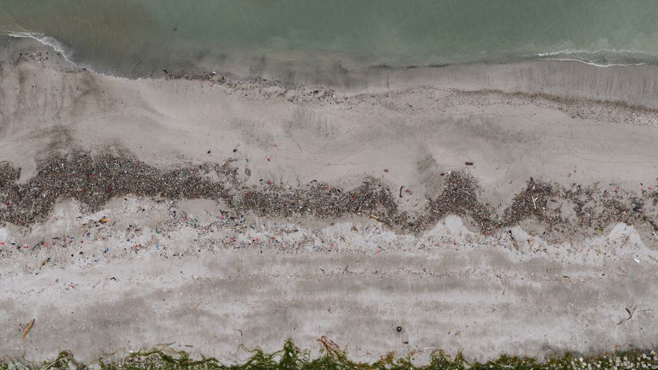

Semantic Segmentation vs Object Detection: Pick Wisely
Both tasks answer 'what is in this image', but they answer it at different resolutions and for different downstream costs. Choosing the wrong one wastes labelling budget and model capacity.

Two questions that sound like one
Object detection answers: where are the objects, and what are they, expressed as boxes. Semantic segmentation answers: which pixel belongs to which class, with no notion of individual instances unless you move to instance or panoptic segmentation. These sound like the same task wearing different clothes, but the difference in output structure changes everything downstream: the loss function, the metric you report, the annotation cost, and the failure modes you should worry about.
I think a lot of task-choice mistakes in computer vision come from picking the task that is fashionable or well-supported by tutorials, rather than the one that matches what the product actually needs. If you need to count cars in a car park, you want boxes. If you need to know exactly which pixels are drivable road surface for a path-planning module, you want a mask. Confusing the two rarely fails loudly; it fails as a model that technically works but never quite does what the stakeholder wanted.
The core intuition worth internalising is this: detection gives you a sparse, discrete answer, a handful of boxes with class labels and confidence scores. Segmentation gives you a dense, per-pixel answer. Sparse outputs are cheap to produce and cheap to label, but they throw away shape information. Dense outputs preserve shape and boundary, but cost far more to annotate and to compute.
A worked example: labelling budget and what it buys you
Suppose you are building a system to detect and outline litter on a beach for an environmental monitoring project, and you have a fixed annotation budget of, say, 200 hours. Bounding box annotation for a moderately cluttered scene typically runs a few seconds per object once an annotator is warmed up; polygon or mask annotation for the same object, especially something irregular like a torn plastic bag, can take five to ten times longer because the annotator has to trace an outline rather than drag a rectangle.
With boxes, your 200 hours might buy you a dataset of several thousand annotated images, each with multiple objects, giving a detector a reasonable shot at learning object appearance and rough location. With masks, the same 200 hours might only buy you a fraction of that image count, but each image carries far richer signal per pixel. If your actual downstream need is 'estimate the area of litter coverage per square metre of beach', boxes are the wrong currency entirely, since a box around an irregular object systematically overestimates area, sometimes by a large margin depending on how elongated the object is. Segmentation gives you area directly and honestly.
Conversely, if the actual need is 'count distinct litter items and flag their rough location for a cleanup crew', segmentation is overkill. You are paying five to ten times the annotation cost for pixel precision that nobody downstream will use, and you are also inheriting the harder evaluation and training dynamics of dense prediction for no product benefit. I have seen the reverse mistake too: teams train a fast detector and then try to bolt on heuristics to estimate area or extent from the box, when a proper segmentation model, even a smaller one, would have given a cleaner and more defensible number from the start.
There is a middle path worth mentioning: instance segmentation and panoptic segmentation combine both ideas, giving you per-object masks rather than boxes or a flat class map. This is genuinely more expensive again, both to annotate and to train, so it should be reserved for cases where you need both 'how many distinct things' and 'exact shape of each thing' simultaneously, such as separating overlapping cells in a microscopy image.

Metrics, evaluation traps, and leakage
The metrics for these two tasks look similar on the surface, mean average precision for detection, mean intersection-over-union for segmentation, but they punish different mistakes. A detector evaluated with mAP at an IoU threshold of 0.5 will happily accept a box that is a bit loose around the object; a segmentation model evaluated with mean IoU has nowhere to hide a sloppy boundary, since every pixel counts. If your product genuinely cares about precise boundaries, for example measuring wound size in a clinical photograph, reporting box-based mAP would be actively misleading about how well the system serves the actual use case, even if the number looks respectable.
Leakage-aware splitting matters just as much here as in any other supervised setting, and arguably more, because both tasks are usually built on top of images with strong spatial and temporal correlation. If your beach litter dataset comes from a handful of filming sessions, splitting by image rather than by session will let near-duplicate frames leak between train and test, inflating both mAP and mean IoU in ways that will not survive contact with a genuinely new beach. I would always split by capture session, by camera, or by geographic tile before splitting by image, and I would check the split for duplicate or near-duplicate frames explicitly rather than trusting a random shuffle.
It is also worth being honest about class imbalance, which affects the two tasks differently. In detection, a rare class simply has few boxes, and average precision per class will be noisy but interpretable in isolation. In segmentation, a rare class might occupy a tiny fraction of total pixels across the dataset, which can make mean IoU for that class swing wildly on a handful of images, and a model can achieve a deceptively high overall pixel accuracy just by getting the dominant background class right. Reporting per-class IoU alongside the mean, rather than the mean alone, is the minimum honesty bar here.
A practical way to decide
My rule of thumb: start from the downstream decision the model output will feed into, not from the task that seems more impressive. If the decision only needs presence, count, or rough location, detection is cheaper to build, cheaper to label, and easier to evaluate honestly. If the decision needs area, boundary precision, or a full scene classification down to the pixel, segmentation earns its cost. And if you need both object-level counting and precise shape at once, be honest with your stakeholders about the annotation and compute budget that instance or panoptic segmentation actually requires, before you commit to it.
Whichever you choose, evaluate on splits that respect real-world independence, report per-class metrics rather than a single flattering average, and compare against a boring baseline, a simple thresholding or heuristic method, before crediting your deep model with the improvement. The task choice is a product decision dressed up as a modelling decision, and treating it that way tends to save a great deal of wasted annotation budget.